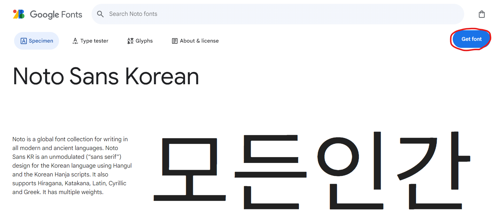

Quarto website 글꼴 적용 방법
요약
https://fonts.google.com/에서 원하는 폰트를 선택
custom.scss를 생성 및 폰트 관련 변수 수정
custom.scss
/*-- scss:defaults --*/
$headings-font-family: "Hahmlet", -apple-system, system-ui, BlinkMacSystemFont, "Segoe UI", Roboto, "Helvetica Neue", Arial, sans-serif;
$font-family-sans-serif: "Gothic A1", system-ui, -apple-system, "Segoe UI", Roboto, "Helvetica Neue", "Noto Sans", "Liberation Sans", Arial, sans-serif, "Apple Color Emoji", "Segoe UI Emoji", "Segoe UI Symbol", "Noto Color Emoji";
/*-- scss:rules --*/
// Variables
$web-font-path: "https://fonts.googleapis.com/css2?family=Gothic+A1&family=Hahmlet:wght@100..900&display=swap";
@if $web-font-path {
@import url($web-font-path);
}_quarto.yml수정
_quarto.yml
format:
html:
theme:
- custom.scssgoogle fonts 선택
google fonts에서는 다양한 글꼴을 제공하고 있으며 가독성 좋은 한글 폰트도 많이 있습니다.
google fonts를 사용하기 위해서는 먼저 https://fonts.google.com/에서 원하는 폰트에 get font 버튼을 누릅니다.

원하는 폰트를 다 선택했다면 우측 상단에 쇼핑백 모양 아이콘을 누룬 뒤 get embed code를 클릭합니다.
아래 그림의 형광색 부분 링크를 복사합니다. 이후 custom.scss 파일에 붙여넣을 예정입니다.
custom.scss 추가를 통한 폰트 변경
SCSS는 CSS Preprocessor 중 하나 입니다. SCSS로 작성된 파일은 CSS로 컴파일되어 웹에서 동작합니다.
Quarto 웹페이지의 테마도 SCSS을 바탕으로 만들어지며 기본값으로 제공하는 SCSS파일이 있습니다. 만약 일부를 수정하고 싶다면 custom.scss를 추가하여 변수를 수정하면 됩니다.
폰트를 수정하기 위해서는 custom.scss에서 2가지 부분만 작성하면 됩니다.
1. google fonts에서 사용하고자 하는 폰트 불러오기
복사했던 링크를 web-font-path에 할당하면 @import을 통해 폰트를 불러옵니다.
SCSS
$web-font-path: "링크";
@if $web-font-path {
@import url($web-font-path);
}2. 불러온 폰트 변수 선언
Quarto 웹페이지 SCSS에서 폰트에 관련된 변수는 3가지 입니다.
| 변수명 | 폰트 적용 위치 |
|---|---|
$headings-font-family |
제목, Navbar 등에 사용되는 폰트 |
$font-family-sans-serif |
본문에 사용 되는 폰트 |
$font-family-monospace |
코드에 사용 되는 폰트 |
아래 코드처럼 원하는 폰트를 할당하면 됩니다.
SCSS
$headings-font-family: "폰트1", "폰트2";
$font-family-sans-serif: "폰트3", "폰트4";
$font-family-monospace: "폰트5";변수 하나에 여러가지 폰트가 할당되어 있는 것을 볼 수 있습니다. 이를 통해 만약 폰트가 제공되지 않는 문자가 있는 경우 그 다음에 선언된 폰트가 적용됩니다.
아래 예시로 작성한 custom.scss를 보면 google fonts에서 Gothic A1와 Hahmlet를 선택한 링크를 $web-font-path에 할당하여 폰트를 불러오고, $headings-font-family와 $font-family-sans-serif의 가장 앞부분에 폰트 이름을 넣어줬습니다.
custom.scss
/*-- scss:defaults --*/
$headings-font-family: "Hahmlet", -apple-system, system-ui, BlinkMacSystemFont, "Segoe UI", Roboto, "Helvetica Neue", Arial, sans-serif;
$font-family-sans-serif: "Gothic A1", system-ui, -apple-system, "Segoe UI", Roboto, "Helvetica Neue", "Noto Sans", "Liberation Sans", Arial, sans-serif, "Apple Color Emoji", "Segoe UI Emoji", "Segoe UI Symbol", "Noto Color Emoji";
/*-- scss:rules --*/
// Variables
$web-font-path: "https://fonts.googleapis.com/css2?family=Gothic+A1&family=Hahmlet:wght@100..900&display=swap";
@if $web-font-path {
@import url($web-font-path);
}_quarto.yml 수정
마지막으로 _quarto.yml에 “custom.scss”를 선언하여 웹사이트에 적용되도록 합니다.
_quarto.yml
format:
html:
theme:
- custom.scss만약 Quarto에서 제공하는 테마를 사용하고 있다면 다음과 같이 _quarto.yml를 수정합니다.
_quarto.yml
format:
html:
theme:
- minty
- custom.scss